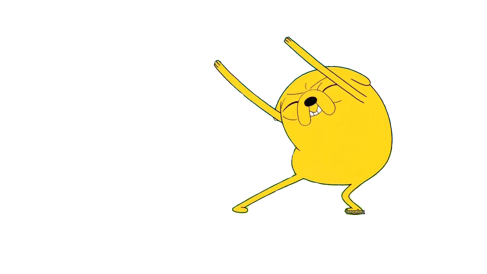
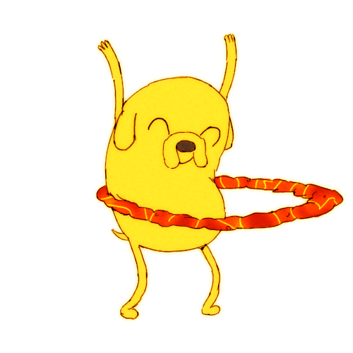
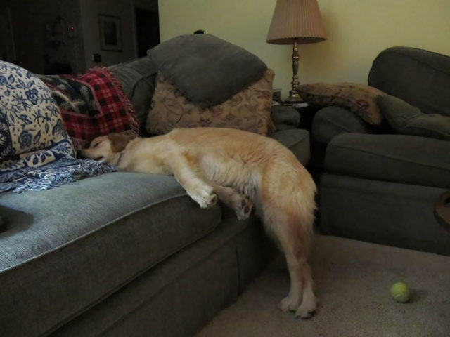
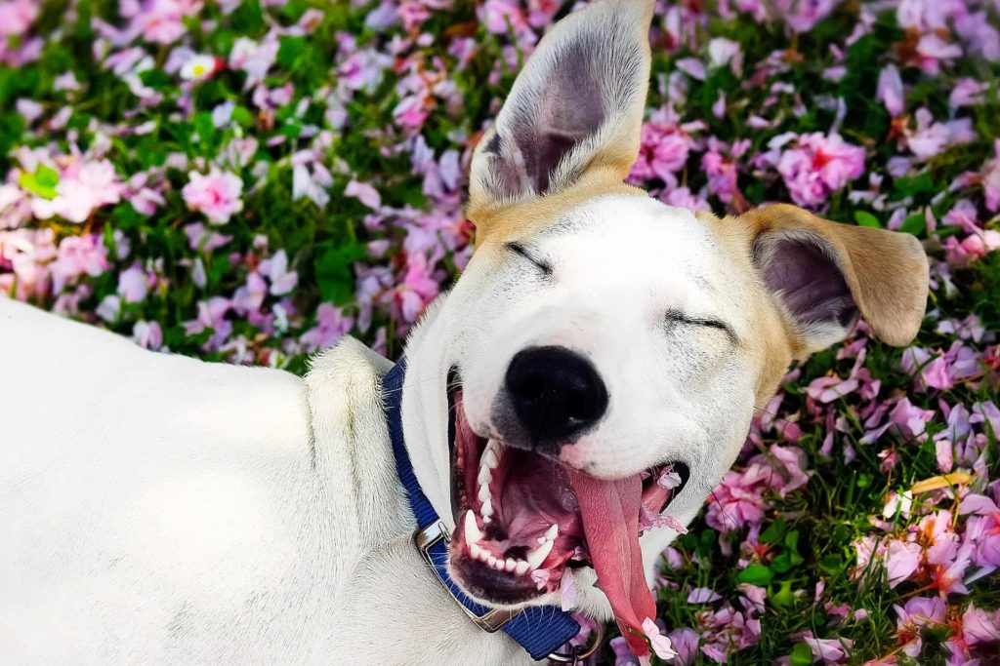

Веселые истории про собак
Мы любим собак потому, что они умеют радоваться жизни!
 
Пропала собака, очень умная.
Шарик, если ты сейчас это читаешь, позвони домой! 🤪
Как-то ко мне зашёл пёс…
Как-то ко мне во двор зашёл старый усталый пёс. Судя по ошейнику и откормленному пузу, у него был дом и о нём хорошо заботились. Пёс спокойно приблизился ко мне, и я потрепал его по загривку.
Он засеменил за мной и вошёл в дом. Медленно пересёк прихожую, свернулся калачиком в углу гостиной и уснул.Через час он встал и подошёл к двери. Я выпустил его.
На следующий день он опять был у меня во дворе, «поздоровался» со мной, снова зашёл в дом, занял тот же угол в гостиной и опять спал около часа. Так продолжалось несколько недель подряд.
Мне стало любопытно, и я приколол записку к его ошейнику: «Хотелось бы узнать, кто хозяин этого замечательного милого пёсика, и знаете ли вы, что почти каждый день он приходит ко мне домой поспать?»
На следующий день пёс пришёл с другой запиской, приколотой к ошейнику: «Он живёт в доме с шестью детьми, причём двоим даже трёх лет не исполнилось. Он просто пытается выспаться. Можно, я с ним завтра тоже приду?»
Собака в мясной лавке
Здоровенная собака входит в мясную лавку с кошельком в зубах. Кладет кошелек на пол и усаживается напротив прилавка.
– Ну че тебе, собачка? Хочешь купить мяса? – улыбаясь, спрашивает мясник.
– Гав! – гавкает пес.
– Гмм, – промычал мясник.
– А какого? Печеночки, фаршу или же на отбивные?..
– Гав-гав! – снова подает голос пес.
– И сколько же на отбивные взвесить? Полкило, кило…
– Гав-гав! – гавкает собака.
Ну, мясник взвесил килограмм и взял деньги из кошелька. Собака, схватив мясо и кошелек, удалилась. Мяснику же стало интересно, что будет дальше, и он последовал за псом. Собака добежала до какого-то дома, толкнула входную дверь и, забежав на третий этаж, стала скрестись в дверь. Дверь вдруг открылась, оттуда выскочил разъяренный мужик и начал ругать пса на чем свет стоит.
– Стой, – орет мясник, – это самый умный пес, какого я когда-либо видел!
– Умный!!! – продолжает кричать мужик, – уже третий раз на этой неделе он забывает взять с собой ключи!!!
Не стучи, дома никого нет
Дача. К воротам подходит какой-то мужчина и начинает стучать по ним кулаком. Стучит, стучит. Никто не отзывается. Стучит сильнее.
Со стороны дачи к воротам тихо подходит собака и говорит:
— Не стучи, дома никого нет.
Мужчина грохается в обморок. Придя в себя, он говорит собаке:
— Ты чё, собака, лаять не умеешь?
Та отвечает:
— Умею, но не хотела тебя пугать
